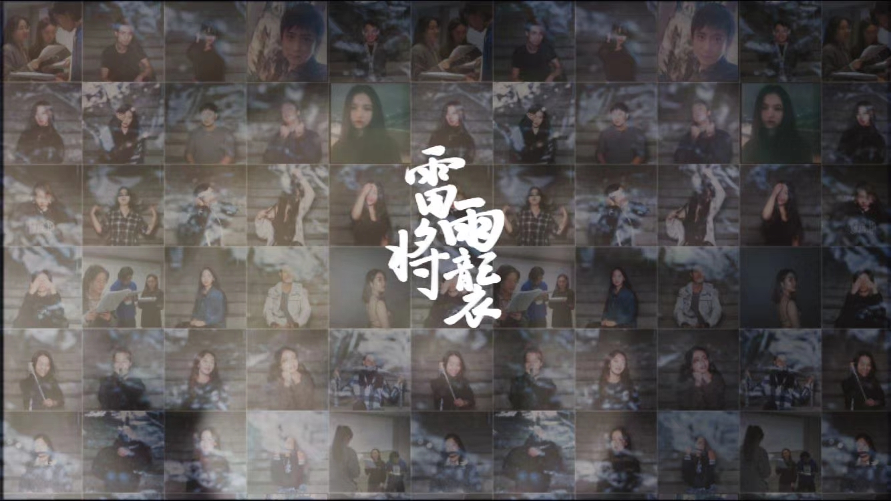
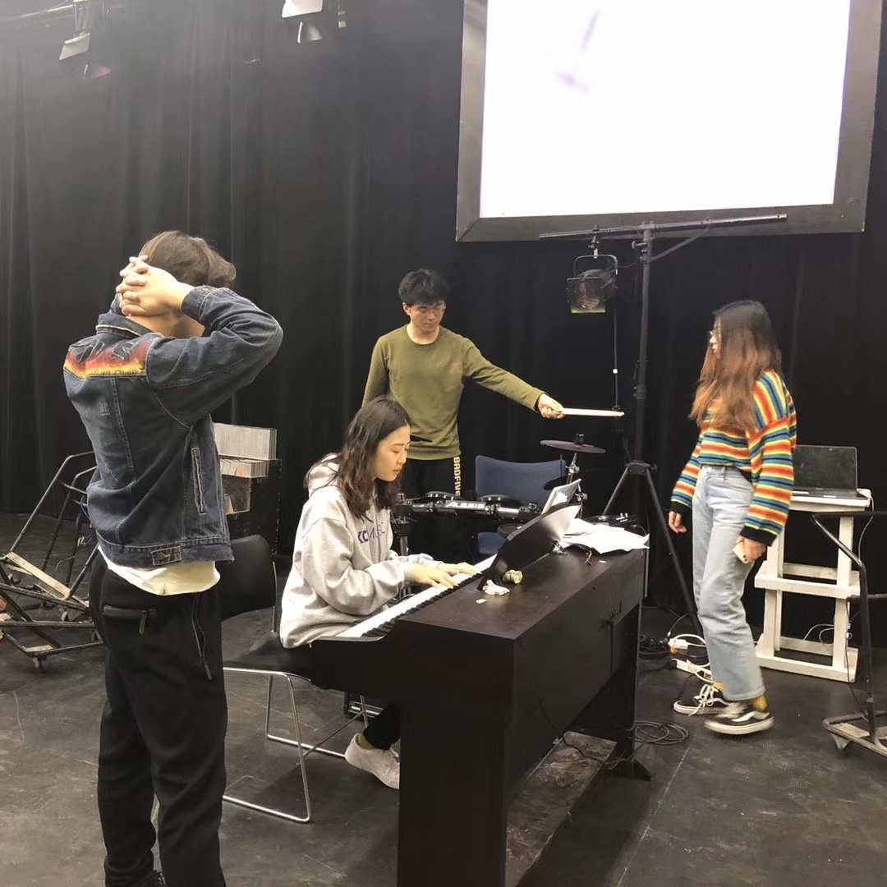
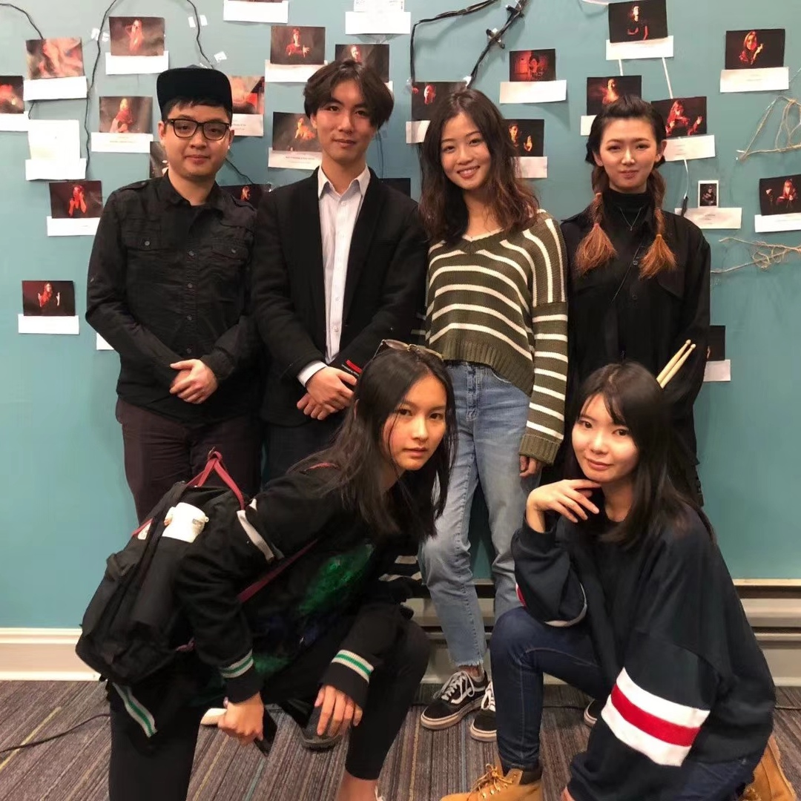
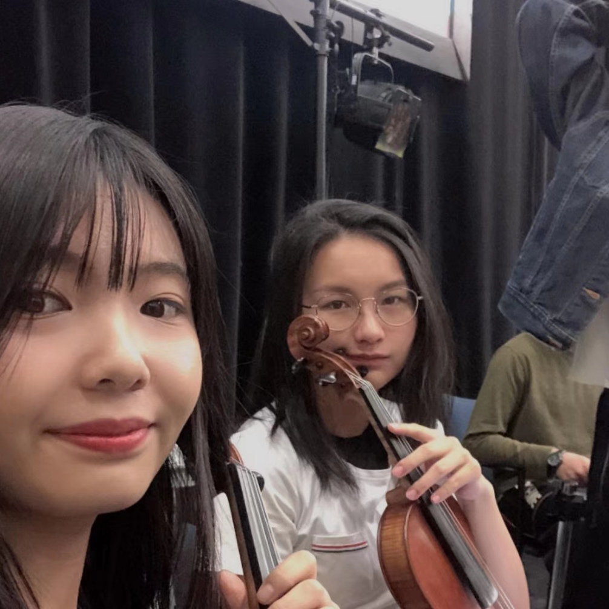
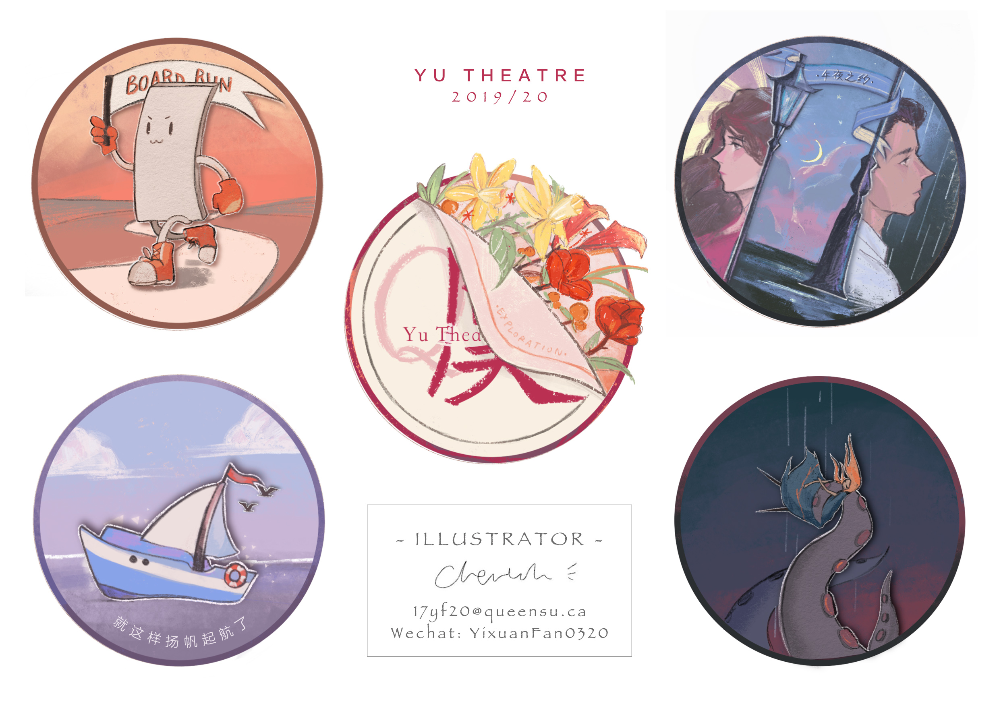

I was working at
Yu Theatre Society is a non-profit student-run theatre company on campus since 2018, dedicating to produce and present the best pieces of modern and contemporary Chinese play at Queen's University,
by surtitling English for the anglophone audience members.



I was participated in their three main stage palys during 2018-2020, which is Rhinoceros In Love, Yu Junior and The Tempest. I joined their stage play as the violinist, and behind the stage, I took commission from them to produce some of the marketing graphic design materials.
